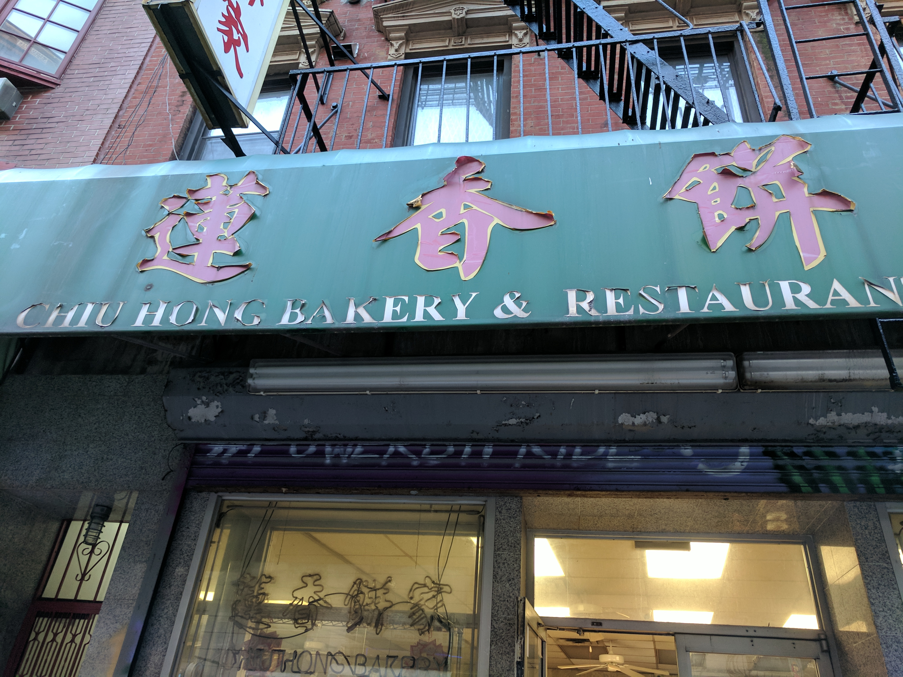

Featured Articles of the Week |
5 Eateries to Survive the Winter |
As the coldness of fall and winter starts to set in, here are this week's |
|  |
A Gem on Mott Street |
This week, we visit a traditional Chinese pastry shop, have some amazing coffee |
Featured Dessert of the Week |
Chinatown Ice Cream Factory |
63 65 Bayard Street, New York, NY 10013 |
Our dessert of the week is Taro Ice Cream from Chinatown Ice Cream Factory! |
Delicious Food on a Budget |
Wah Fung Fast Food |
79 Chrystie St, New York, NY 10002 |
Here at BoBA, we believe that good food doesn't need to burn a hole in your wallet. |
Where's the Boba? |
 |
Kung Fu Tea |
Multiple locations |
What's an issue of BoBA without our weekly feature on the drink this newsletter was inspired by? |